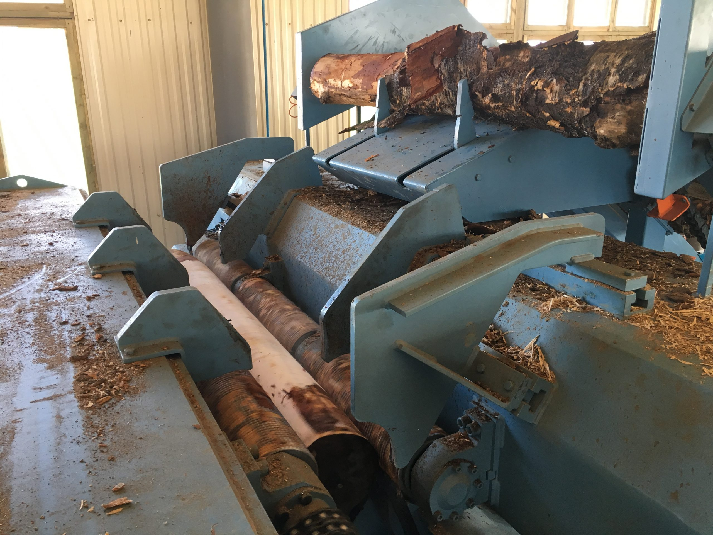
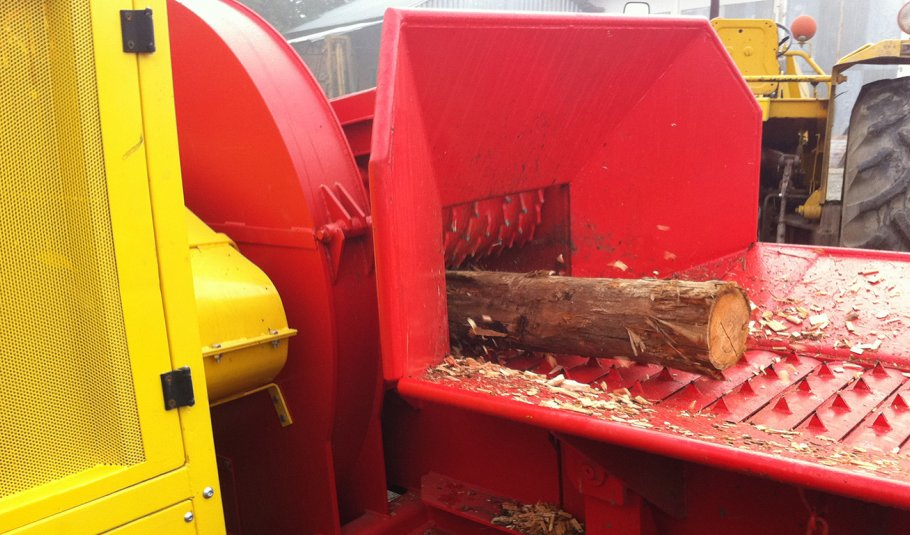
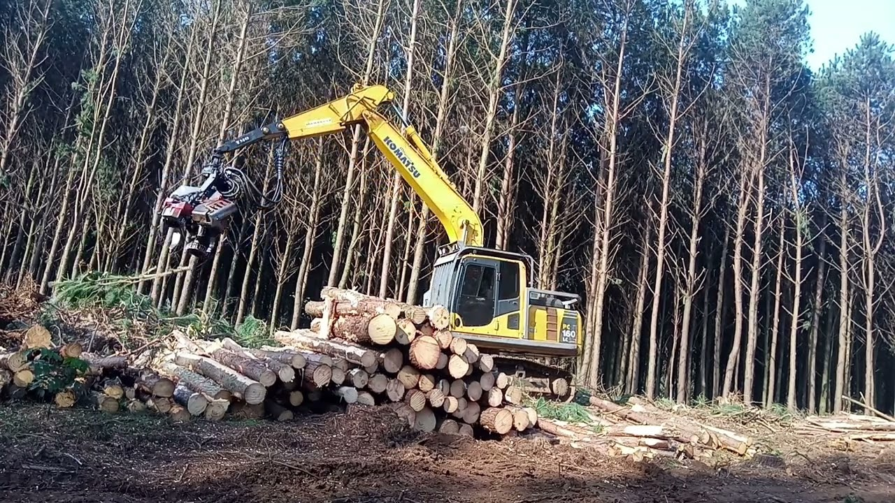
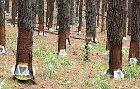
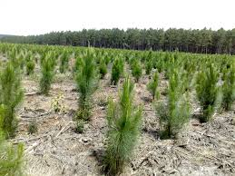

Produção do Compensado
Recepção e Preparo da Madeira
A produção do compensado inicia-se com a recepção das toras de Pinus, que são selecionadas, cortadas em tamanhos adequados e descascadas. As toras são então cozidas ou vaporizadas para amolecer a madeira, facilitando o corte das lâminas.
Laminação
A laminação é o processo de corte das toras em lâminas finas, utilizando uma máquina chamada laminadora. As lâminas são cortadas em diferentes espessuras, dependendo do tipo de compensado a ser produzido.
Secagem e Seleção
As lâminas são secas em estufas para reduzir o teor de umidade, evitando o empenamento e a deterioração do produto final. Após a secagem, as lâminas são selecionadas e classificadas de acordo com a qualidade.
Colagem e Prensagem
As lâminas são coladas umas sobre as outras, com a direção das fibras alternadas em cada camada, para garantir a resistência e estabilidade do compensado. O conjunto é prensado sob alta pressão e temperatura para fixar a cola e formar o painel de compensado.
Acabamento e Corte
Os painéis de compensado são lixados para obter uma superfície lisa e uniforme. Em seguida, são cortados nas dimensões desejadas e podem receber acabamentos como revestimento com lâminas de madeira nobre ou pintura.